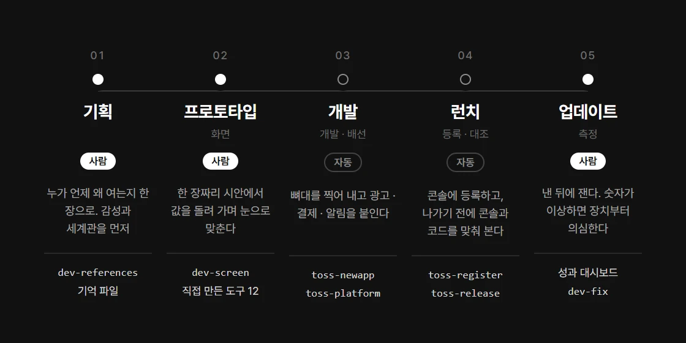
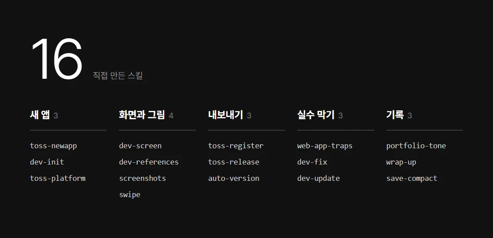
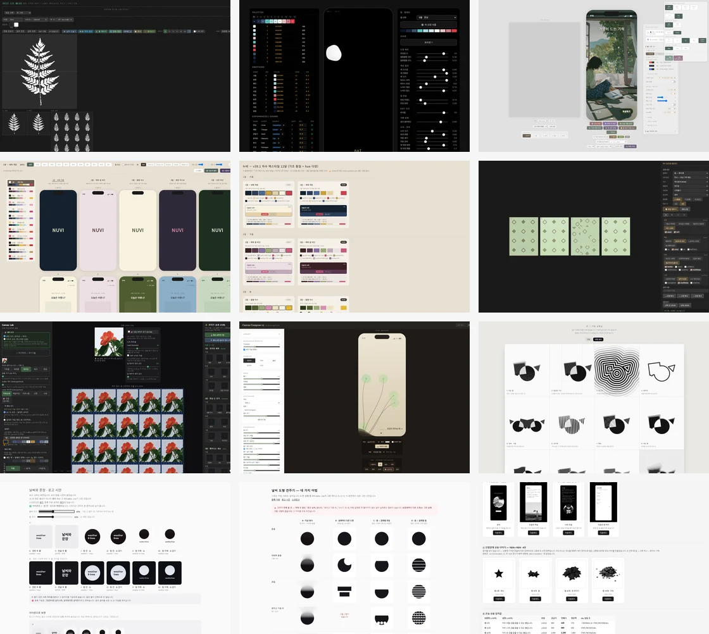
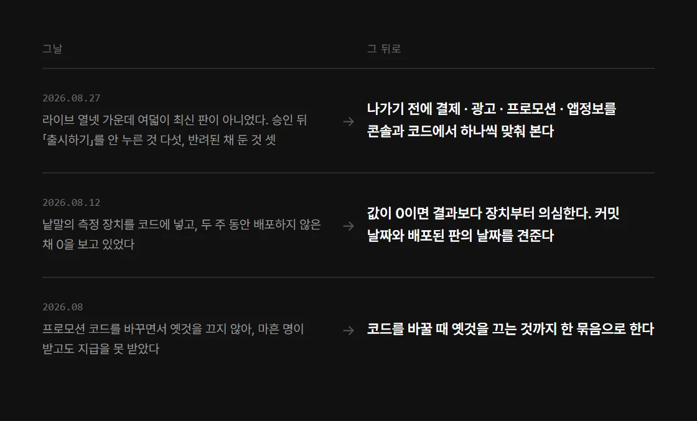
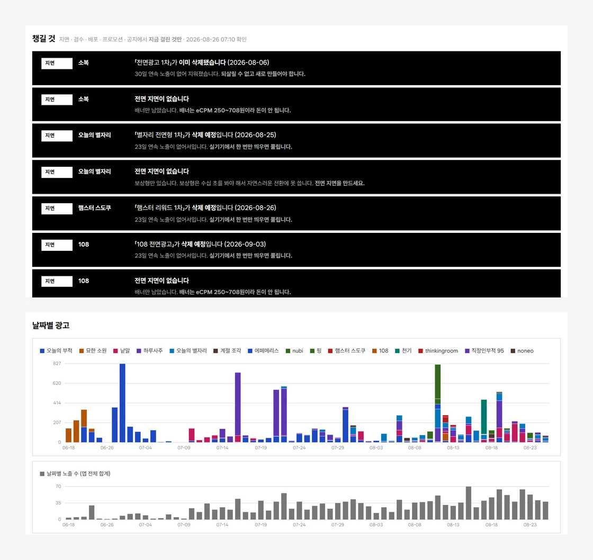
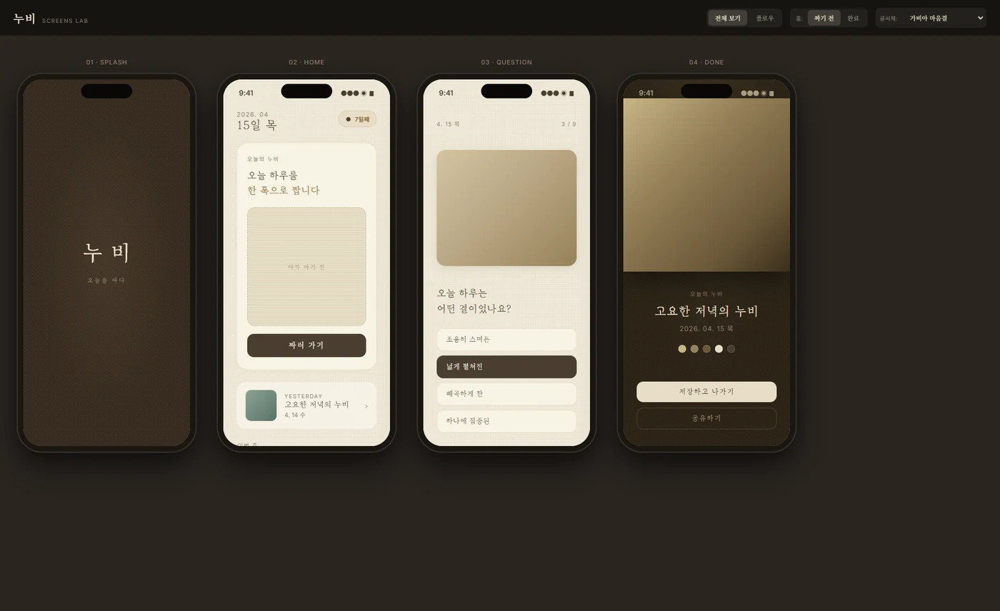
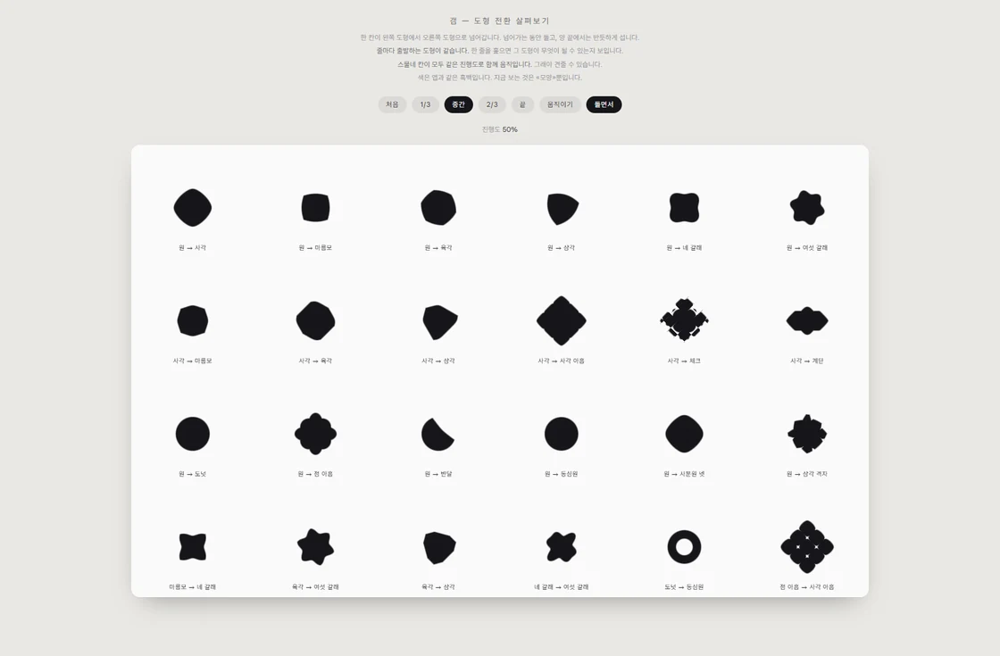
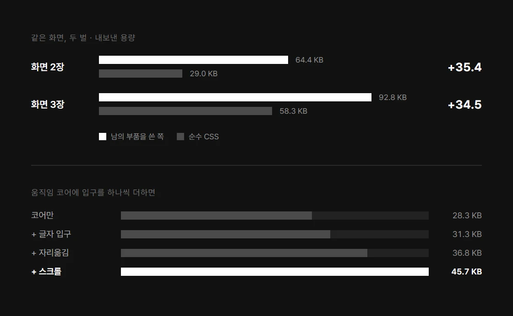
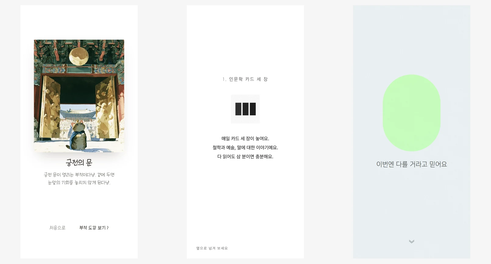

혼자 만드는 앱, 어디까지 자동화해도 될까?
혼자 만들면 실수도 앱 수만큼 늘어나요. 그래서 되풀이되는 일은 기계에 맡기고, 사람은 기획 의도가 화면에 그대로 나왔는지 보는 데 쓰기로 했어요. 무엇을 맡겼고, 실수를 어떻게 절차로 바꿨고, 무엇을 직접 확인했고, 어떻게 가볍게 만들고 버렸는지 이야기해 보려고 해요.

앱 하나가 나가기까지의 다섯 단계예요. Products의 일곱 걸음을 크게 묶었어요. 03 개발과 04 런치는 도구가 맡고, 사람은 기획과 프로토타입과 업데이트에 남아요
앱을 낼 때마다 같은 일이 되풀이됐어요. 새 앱 만들기, 토스 SDK 붙이기, 콘솔 등록, 출시 전 대조, 갈무리 찍기, 문서 갱신 같은 일이죠. 그래서 이걸 전부 스킬로 만들어 두었어요.
등록과 광고와 프로모션은 콘솔 MCP로 붙였어요. 숫자 모으기도 마찬가지예요. 손으로 할 때는 콘솔을 서른네 번 부르고 응답을 옮겨 적었는데, 이제는 대시보드 명령 하나로 끝나요. 처음 돌릴 때 46.8초, 두 번째부터는 1.6초가 걸리고, 손으로 모은 값과 차이는 0이었어요.
스크립트로 안 되는 일은 도구를 직접 지었어요. 초기에 만든, 그림을 256도트로 바꾸는 변환기와 꽃잎을 조립하는 도구가 그런 예예요.

되풀이되는 일을 맡긴 스킬 열여섯이에요. 남이 만든 건 빼고 직접 만든 것만 적었어요

스크립트로 안 되는 건 도구를 지어서 써요. 왼쪽 위부터 도트 무늬 서랍, 값 스무 개를 돌리는 패널, 화면과 조작판을 나란히 둔 실험실, 열두 달 팔레트를 폰에 입혀 보는 판, 팔레트 한눈에 보기, 무늬 미리보기, 천을 이어 붙여 보는 판, 꽃을 조립하는 판, 도형 아홉을 한 번에 견주는 판, 로고 크기 재기, 도형 고르기, 스토어 갈무리 만들기예요. 대개 폰 틀 옆에 조작판이 붙어 있어요. 값을 돌려 가며 눈으로 맞추려고 지은 것들이라 그래요
그렇게 맡겨도 사고는 났어요. 그때마다 같은 사고가 다시 안 나게 절차를 하나씩 만들었어요.
승인이 난 앱 열넷 가운데 여덟이 사람들에게 안 가 있던 날이 있었어요. 그날 출시 전 전수 대조를 만들었어요.
측정 장치를 코드에 넣고도 두 주 동안 배포하지 않아, 0을 보고 있던 적도 있어요. 그 뒤로는 값이 0이면 장치부터 의심해요.
프로모션 코드를 바꾸면서 옛것을 안 꺼서, 40명이 헛걸음한 일도 있었죠. 이제는 바꿀 때 옛것을 끄는 것까지 절차에 넣었어요.
매일 보던 대시보드도 예외는 아니었어요. 포트폴리오로 정리하려고 남에게 설명하듯 처음부터 훑어보니, 버그가 셋, 틀린 칸이 열네 개였어요. 그래서 숫자를 검사하는 장치를 따로 세웠어요. 이제는 틀린 칸이 0이 나와야 갱신이 끝나요.

한 번 난 사고 셋과 그날 생긴 절차예요. 한 바퀴를 절별로 적은 건 일하는 방식에 있어요

직접 만든 성과 대시보드예요. 위는 지면·검수·배포·프로모션에서 «지금 걸린 것»만 모은 칸이고, 아래는 앱마다 광고 노출과 수익을 쌓아 본 그래프예요. 콘솔을 서른네 번 부르던 일이 명령 하나가 됐어요. 숫자를 검사하는 장치 11종이 틀린 칸 0을 낼 때까지는 갱신이 안 끝나요. 화면을 어떻게 짰는지는 성과 대시보드에 적었어요
기계에 맡기다 보면 AI가 「고쳤습니다」라고 말하는 순간이 자주 와요. 저는 그 말만 듣고 넘어가지 않았어요. 잰 값과 화면으로 다시 본 뒤에만 다음으로 갔어요.
고르는 일도 마찬가지예요. 레이아웃을 잡고, 핵심 그림을 여러 장 갈아 끼워 보고, 글씨체는 여섯까지 나란히 놓고 골랐어요. 움직임도 안을 여럿 만들어 견줬고요. 모노 여섯을 만들 때는 글씨체 비교판과 움직임 비교판을 앱마다 따로 만들었어요.
여러 앱이 함께 쓸 부품을 고를 때도 예상으로 정하지 않았어요. 후보 두 벌을 실제로 빌드해 용량을 재 보니, 화면이 늘어도 차이가 늘 34~35KB로 같았어요. 들이는 순간 한 번 붙는 값이라는 뜻이었죠. 그래서 처음 예상을 뒤집고, 남의 부품을 쓸 때만 그 스택을 들이기로 했어요.

글씨체 비교판이에요. 화면 넷을 한자리에 놓고, 오른쪽 위에서 글씨체를 갈아 끼우며 골라요. 한 화면만 보고 고르면 다른 화면에서 깨지거든요

움직임 비교판이에요. 도형이 변하는 정도와 흔들리는 결을 값으로 돌려 가며, 아홉 개를 한 번에 견줘요

부품도 두 벌을 빌드해 재서 골랐어요. 무엇을 공유하고 무엇을 앱마다 두었는지는 공용 부품에 적었어요
직접 확인하는 습관은 실험에도 그대로 썼어요. 좋은 감성이 보이면 상상만 하지 않고, 빨리 만들어 운영에 올렸어요.
무거운 앱을 만들다가 글 중심으로 빠르게 흐르는 모노 여섯을 만들었어요. 그다음에는 캐주얼한 30초 에세이로 갔죠.
조용한 여섯은 숫자도 조용했어요.
고민 다이얼만 봐도, 처음 온 사람 가운데 다음 날 다시 온 사람이 5.2%, 일주일 뒤에 온 사람이 1.8%였어요. 그래서 결론을 한 줄로 적고 다음으로 갔어요. 조용하게 만든 앱은 조용히 지워졌다.

왼쪽부터 6월의 부적, 9월의 모노, 9월 21일의 30초 에세이예요
되풀이되는 일을 도구에 맡길수록 빨라졌어요. 그런데 빨라진 만큼, 확인을 건너뛴 자리에서 사고가 났어요. 승인이 곧 출시인 줄 알았던 앱, 넣기만 하고 배포하지 않은 측정 장치, 끄는 걸 놓친 옛 코드처럼요.
그래서 맡긴 일마다 확인하는 장치를 하나씩 붙였어요. 출시 전 대조, 배포된 판의 날짜 확인, 틀린 칸이 0이어야 끝나는 갱신이 그렇게 생겼어요.